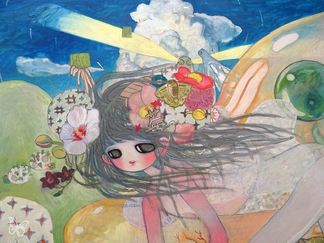
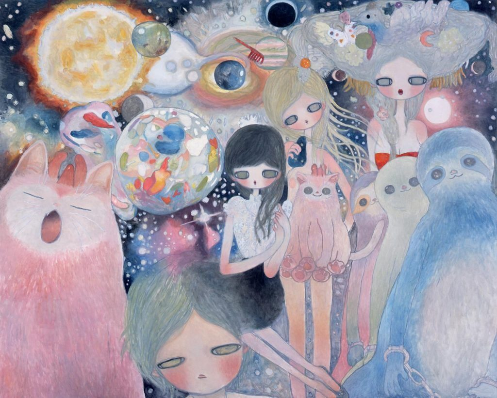
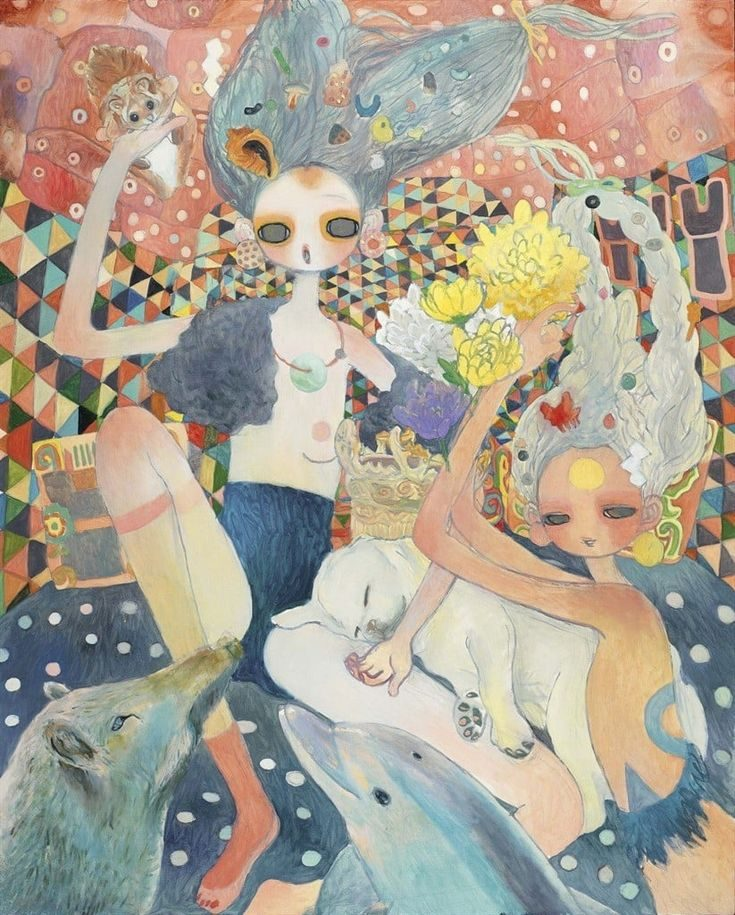
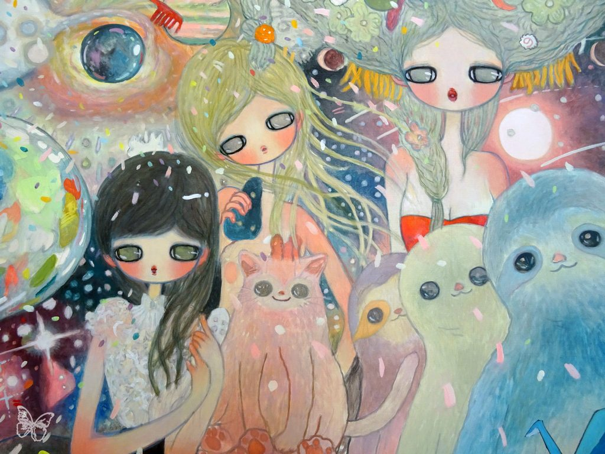

Aya Takano
painter · manga artist · sci-fi essayist





Who she is
Aya Takano is a Japanese painter, manga artist, and science fiction writer. She was born in Saitama, Japan in 1976. She is known for painting dreamy, futuristic worlds with big-eyed girls and animals.
Quick facts
- Born 1976Saitama, Japan
- Tama Art UniversityGraduated in 2000
- Kaikai KikiMember of Takashi Murakami's art studio
- SuperflatPart of the art movement
Explore
- Early LifeWhere her imagination came from
- SuperflatHow her career began
- Her ArtHer style and a gallery
- ExhibitionsWhere her work has been shown